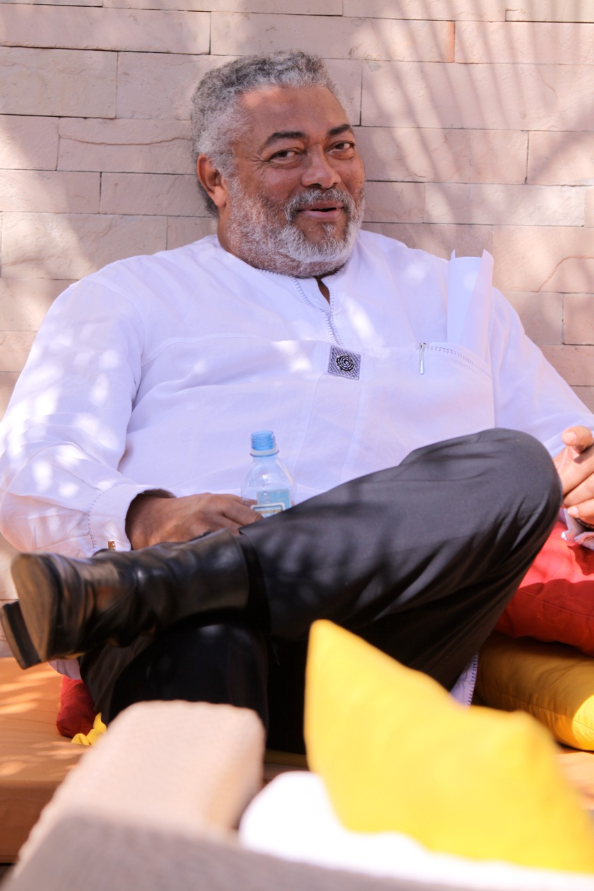
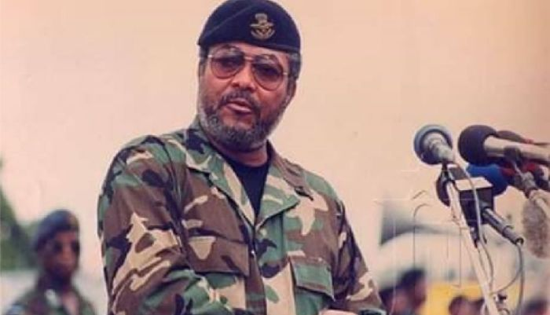
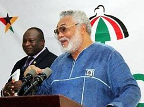
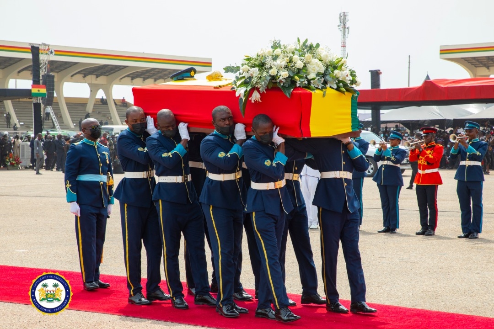

Jerry John Rawlings was a military officer and politician who led the country from 1981 to 2001 and also for a brief period in 1979. He led a military junta until 1992, and then served two terms as the democratically elected President of Ghana.
Rawlings came to power in Ghana as a flight lieutenant of the Ghana Air Force following a coup d'état in 1979. Prior to that, he led an unsuccessful coup attempt against the ruling military government on 15 May 1979, just five weeks before scheduled democratic elections were due to take place. After handing power over to a civilian government, he took back control of the country on 31 December 1981 as the chairman of the Provisional National Defence Council (PNDC). In 1992, Rawlings resigned from the military, founded the National Democratic Congress (NDC), and became the first President of the Fourth Republic. He was re-elected in 1996 for four more years.After two terms in office, the limit according to the Ghanaian Constitution, Rawlings endorsed his vice-president John Atta Mills as a presidential candidate in 2000. Rawlings served as the African Union envoy to Somalia.He died in November 2020, at age 73 and was accorded a state funeral.Jerry John Rawlings was born Jerry Rawlings John on 22 June 1947 in Accra, Ghana, to Victoria Agbotui, an Anlo Ewe from Dzelukope, Keta, and James Ramsey John, a chemist from Castle Douglas in Kirkcudbrightshire, Scotland. Rawlings attended Achimota School and a military academy at Teshie.Rawlings was married to Nana Konadu Agyeman, whom he met while at Achimota College. They had three daughters: Zanetor Rawlings, Yaa Asantewaa Rawlings, Amina Rawlings; and one son, Kimathi Rawlings.
Rawlings established the Economic Recovery Program (ERP) suggested by the World Bank and the International Monetary Fund in 1982 due to the poor state of the economy after 18 months of attempting to govern it through administrative controls and mass mobilization. The policies implemented caused a dramatic currency devaluation, the removal of price controls, and social-service subsidies which favored farmers over urban workers, and privatization of some state-owned enterprises, and restraints on government spending. Funding was provided by bilateral donors, reaching US$800 million in 1987 and 1988, and US$900 million in 1989.
Between 1992 and 1996, Rawlings eased control over the judiciary and civil society, allowing a more independent Supreme Court and the publication of independent newspapers. Opposition parties operated outside of parliament and held rallies and press conferences.

Rawlings finished his secondary education at Achimota College in 1967. He joined the Ghana Air Force shortly afterwards; on his application, the military switched his surname John and his middle name Rawlings. In March 1968, he was posted to Takoradi, in Ghana's Western Region, to continue his studies. He graduated in January 1969, and was commissioned as a pilot officer, winning the coveted "Speed Bird Trophy" as the best cadet in flying the Su-7 ground attack supersonic jet aircraft as he was skilled in aerobatics. He earned the rank of flight lieutenant in April 1978. During his service with the Ghana Air Force, Rawlings perceived a deterioration in discipline and morale due to corruption in the Supreme Military Council (SMC). As promotion brought him into contact with the privileged classes and their social values, his view of the injustices in society hardened. He was thus regarded with some unease by the SMC. After the 1979 coup, he involved himself with the student community of the University of Ghana, where he developed a more leftist ideology through reading and discussion of social and political ideas.Rawlings grew discontented with Ignatius Kutu Acheampong's government, which had come to power through a coup in January 1972. Acheampong was accused not only of corruption, but also of maintaining Ghana's dependency on pre-colonial powers, in a situation which led to economic decline and impoverishment.
Rawlings was part of the Free Africa Movement, an underground movement of military officers who wanted to unify Africa through a series of coups. On 15 May 1979, five weeks prior to civilian elections, Rawlings and six other soldiers staged a coup against the government of General Fred Akuffo, but failed and were arrested by the military. Rawlings was publicly sentenced to death in a General Court Martial and imprisoned, although his statements on the social injustices that motivated his actions won him civilian sympathy. While awaiting execution, Rawlings was sprung from custody on 4 June 1979 by a group of soldiers. Claiming that the government was corrupt beyond redemption and that new leadership was required for Ghana's development, he led the group in a coup to oust the Akuffo Government and Supreme Military Council. Shortly afterwards, Rawlings established and became the Chairman of a 15-member Armed Forces Revolutionary Council (AFRC), primarily composed of junior officers. He and the AFRC ruled for 112 days and arranged the execution by firing squad of eight military officers, including Generals Kotei, Joy Amedume, Roger Felli, and Utuka, as well as the three former Ghanaian heads of state; Acheampong, Akuffo, and Akwasi Afrifa.
These executions were dramatic events in the history of Ghana, which had previously suffered few instances of political violence. Rawlings later implemented a much wider "house-cleaning exercise" involving the killings and abduction of over 300 Ghanaians. Elections were held on time shortly after the coup. On 24 September 1979, power was peacefully handed over by Rawlings to President Hilla Limann, whose People's National Party (PNP) had the support of Nkrumah's followers. Two years later, on 31 December 1981 Rawlings ousted President Hilla Limann in a coup d'état, claiming that civilian rule was weak and the country's economy was deteriorating. The killings of the Supreme Court justices (Cecilia Koranteng-Addow, Frederick Sarkodie, and Kwadjo Agyei Agyepong), military officers Major Sam Acquah and Major Dasana Nantogmah also occurred during the second military rule of Rawlings. However, unlike the 1979 executions, these persons were abducted and killed in secret and it is unclear who was behind their murders, though Joachim Amartey Kwei and four others were convicted of murdering the Justices and Acquah, and were executed in 1982.

Mr.Rawlings was a former military leader and subsequent politician who ruled Ghana from 1981 to 2001 and also a brief period in 1979.
He led a military junta and subsequently served two terms as a democratically elected President of Ghana.
1979 coup Flight Lieutenant Jerry John Rawlings led several members of the air force (junior officers and corporals) to attempt an overthrow of the government on June 4, 1979. They were unsuccessful.
During his trial, Rawlings justified his action by claiming that official corruption had eroded public confidence in the government and had tarnished the image of the armed forces.
Rawlings also charged that Syrian and Lebanese businessmen living in Ghana had gained control of the country's economy at the expense of the African majority hence his action.
What did he do in 1981?Jerry John Rawlings who was of the opinion that the Limann regime was unable to resolve Ghana's neocolonial economic dependency, led a second coup against Limann and indicted the entire political class on 31 December 1981.
Following the formation of the Provisional National Defence Council (PNDC), which ruled Ghana following the military coup d'état on 31 December 1981, there was pressure from the international community to restore democracy.
Formation of NDCMr. Rawlings formed the National Democratic Congress (NDC) as the ruling party ahead of the 1992 elections. He won that election.
Elected first president of the fourth republicHe was elected on the ticket of NDC as the first elected president of Ghana's fourth republic with Kow Nkensen Arkaah as his Vice President.
He (Mr. Rawlings) was re-elected president in 1996 with John Evans Atta-Mills as his Vice President.
His second term ended in 2001.
Hands over power peacefully to Kufuor government He peacefully handed over to the New Patriotic Party's John Agyekum Kufuor, ensuring the continuation of Ghana's new, democratic story which has endured to this day.
He, however, became an ardent critic of the Kufour administration accusing the government of engaging in corrupt deals.
His relationship with the late President Mills became soar after the Mills-led administration failed to prosecute persons he (Mr. Rawlings) believed to have been corrupt.
Characteristic of him, Mr. Rawlings also criticized Mr. Mahama's administration and subsequently the Akufo-Addo government.
July 1984: the Order of Jose Marti by the Cuban leader Fidel Castro.
October 2013: Honorary degree (Doctorate of Letters) from the University for Development Studies in northern Ghana.
This award recognised Rawlings's contribution to the establishment of the University. In 1993, he used his US$50,000 Hunger Project cash prize as seed money to sponsor the establishment of the state-owned university (founded in May 1992), the first of its kind in the three northern regions of Ghana.
October 2013: the Global Champion for People's Freedom award bestowed the Mkiva Humanitarian Foundation.
August 2014: Doctor of Letters, Honoris Causa.
August 2018: Marcus Garvey Awards.
December 2018: Enstooled as the Togbuiga Nutifafa I of Anlo, a development chief in the Ghanaian chieftaincy system.

Rawlings died on 12 November 2020 at Korle-Bu Hospital in Accra, a week after having been admitted for a "short term illness" in Ghana. According to some reports, his death was caused by complications from COVID-19 . His death came nearly two months after that of his mother, Victoria Agbotui, on 24 September 2020. President Nana Akufo-Addo declared a seven-day period of mourning in his honor and flags flown at half-mast. His family members appealed to the Government of Ghana to bury him in Keta in the Volta Region. A schedule for the signing of a book of condolence was opened in his memory. His funeral, originally planned for 23 December 2020, was postponed at the request of his family.
From 24–27 January, 2021, funeral ceremonies were organised at Accra in Rawlings' memory.
A requiem mass for Jerry Rawlings was held at the Holy Spirit Cathedral on 24 January, 2021, followed by a vigil at the Air Force Officers' Mess in Accra later that evening. His body was laid in state in the foyer of the Accra International Conference Centre from 25–26 January, 2021. There were also traditional rites performed by the Anlo Ewe people of his maternal ancestry. On 27 January 2021, a state funeral, attended by national and international political leaders, paramount chiefs, diplomats and other dignitaries, was held at the Black Star Square before his burial service at the Military Cemetery at Burma Camp, with full military honours, including a slow march by the funeral cortège, a flypast of a Ghana Air Force helicopter, the sounding of the Last Post by army buglers and a 21-gun salute.
This page was edited on 8 February 2021,
privacy policy
about abkia
disclaimers
mobile view
developer